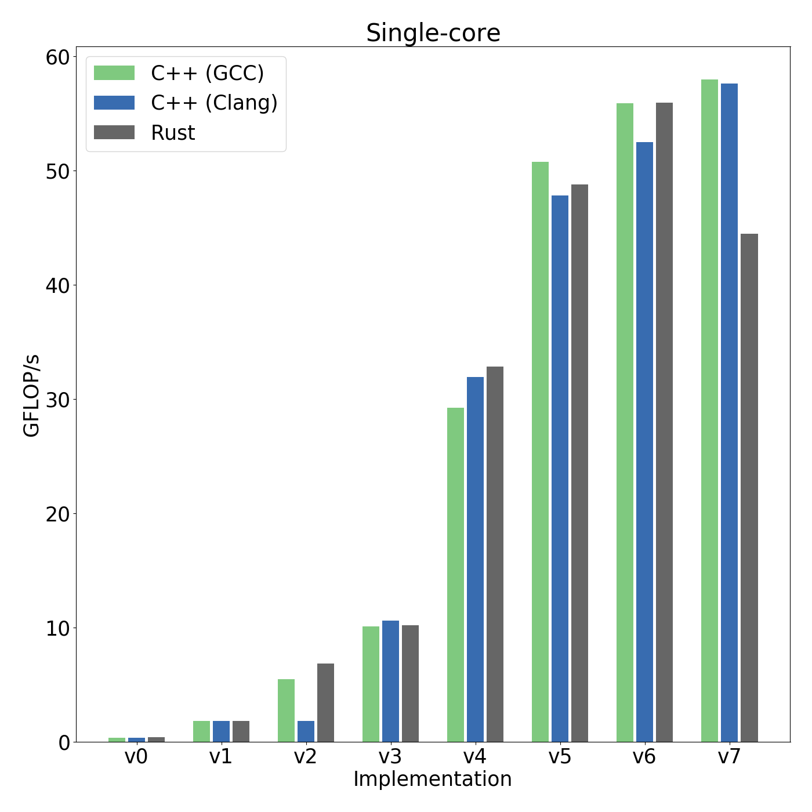
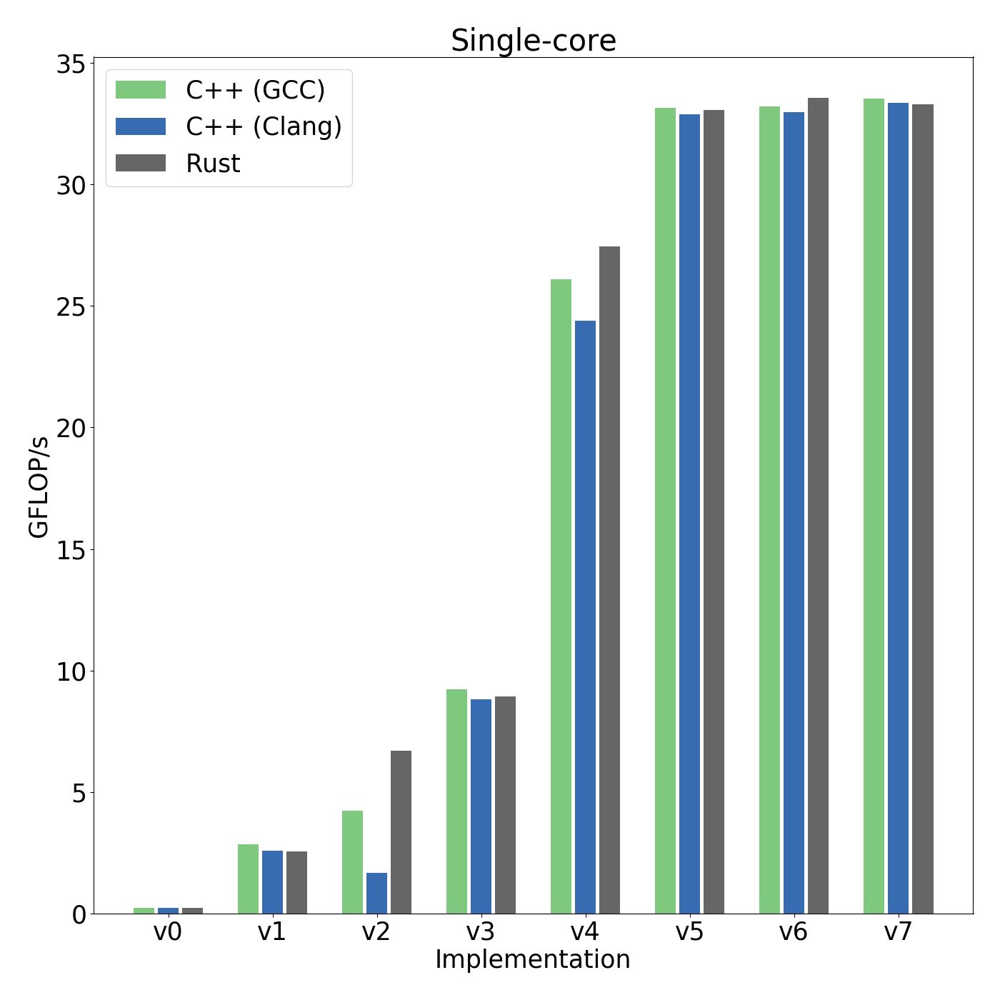
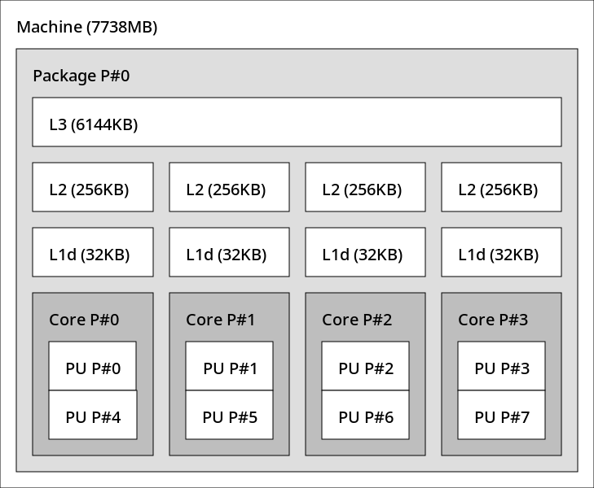
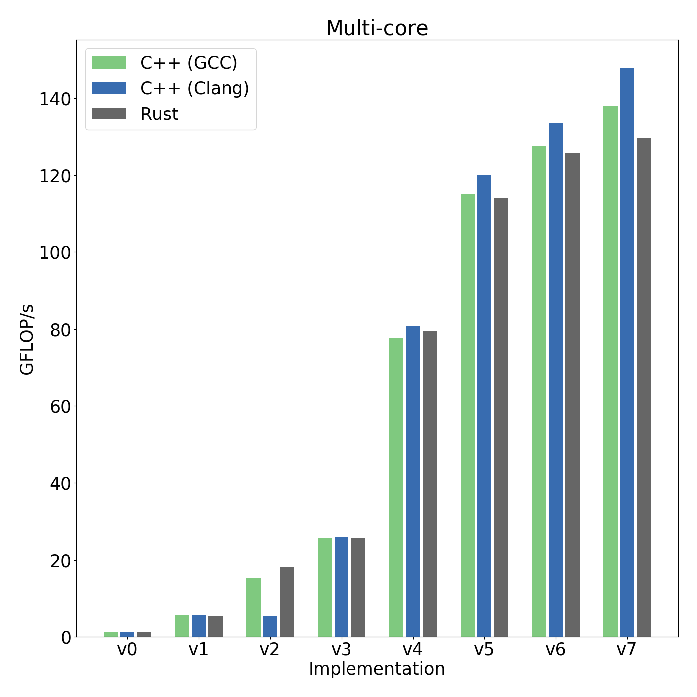

Benchmark results
All 8 implementations have so far been benchmarked on three different Intel CPUs. You can find the benchmark program on GitHub.
Benchmark parameters
- All benchmarks use an input array containing
6000 * 6000 = 36Melements, allocated and initialized before the benchmark timing starts, and destroyed after the timing has ended. - All elements of the input array are single precision floating point numbers drawn uniformly at random from
[0, 1.0). - Before compiling the single-threaded benchmark programs, all parallel libraries were explicitly disabled using compile time switches.
- When benchmarking in parallel, the parallel libraries were instructed to use 4 software threads and the benchmark process was bound with
tasksetto 4 physical cores.
Benchmark 1: Intel Xeon E3-1230 v5
- Mid-range server/workstation CPU with 4 physical cores and 8 hardware threads (hyper-threading).
- Maximum clock speed 3.8 GHz.
- Intel specifications.
- Wikichip.

Compiler versions
- C++ (GCC):
g++ 7.4.0-1ubuntu1 - C++ (Clang):
clang 6.0.0-1ubuntu2 - Rust:
rustc 1.38.0-nightly
![]xeon-multi-core-img](img/Xeon-E3-1230-v5/multi_core.png)

Benchmark 2: Intel i5-4690k
- Mid-range desktop CPU with 4 physical cores and 4 hardware threads (no hyper-threading).
- Overclocked to 4.3 GHz.
- Intel specifications.

Compiler versions
- C++ (GCC):
g++ 9.1.0 - C++ (Clang):
clang 8.0.1 - Rust:
rustc 1.38.0-nightly
![]i5-4690k-multi-core-img](img/i5-4690k/multi_core.png)

Benchmark 3: Intel i5-8250U
- Mid-range laptop CPU with 4 physical cores and 8 hardware threads.
- Maximum clock speed 3.4 GHz.
- Intel specifications.

Compiler versions
- C++ (GCC):
g++ 9.1.0 - C++ (Clang):
clang 8.0.1 - Rust:
rustc 1.38.0-nightly

![]i5-8250U-single-core-img](img/i5-8250U/single_core.png)